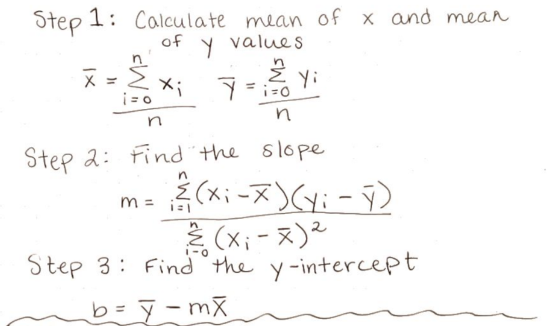
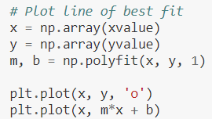
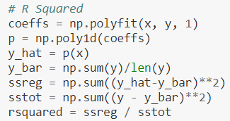
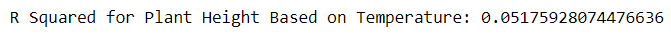
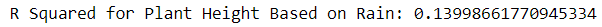
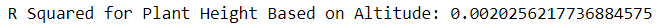
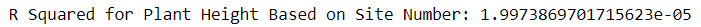

Access the Jupyter code here
When dealing with linear regression, scatter plots are useful because they can demonstrate statistical data such as the average, max, or min of dependant data. Here is the portion of our code that created the scatter plot. We passed two lists into a function and it plotted the data at each index of the lists.

This lab focused on the height of plants (dependent) based on temperature, rain, altitude, and site number (independent). Here are the scatter plots that were created with our Jupyter code.


You calculate the line of best fit by finding the mean of the x data and the mean of the y data. Then by using the menas of the data that you found, you can find the slope of the line. The last step is to find the y-intercept, which can be found by using the means of the data and the slope. Plug the data into the equation y = mx + b and you have found the line of best fit.
The line of best fit is a line that, based on the data provided, could best predict future trends.The red line in the above graphs are the line of best fit. For example, in "Plant Height vs. Temperature" you could predict that in warmer climates, plants grow better. There could be a point where too high temperatures could hinder the height, but based on the trend the comparison would be positive. On the other hand, in "Plant Height vs. Altitude" the higher the altitdude, the worst a plant eill grow. The following code is how we found and plotted the line of best fit.
Standard error is the result of comparing the mean of an overall population of data to the mean of a smaller set of data. scribbr




